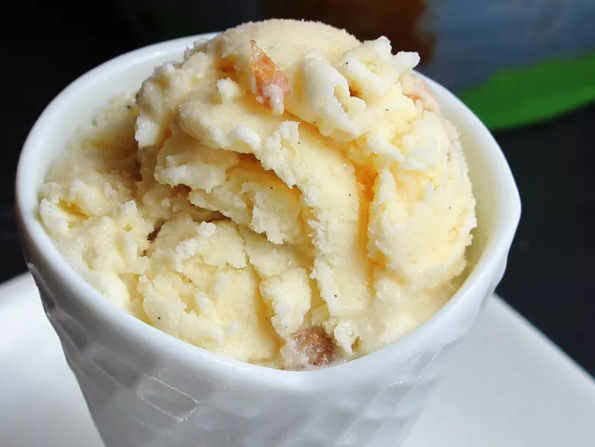

Gelato

A delicious Italian dessert to finish the meal!
Gelato (Italian for “frozen”) is handmade from whole milk, sugar, and other flavourings, typically fruit, chocolate, and nuts. It uses high-quality fresh ingredients. These ingredients slowly incorporate air as they are frozen, resulting in a thick soft cream that is slow to melt.
Ingredients
- 2 Cups Milk
- 1 Cup Heavy Cream
- 4 Egg Yolks
- ½ Cup Sugar
Steps
- Mix milk and cream in a medium saucepan. Warm until foam forms around the edges. Remove from heat.
- Beat egg yolks and sugar until frothy in a large bowl. Gradually pour the warm milk into egg yolks and sugar, whisking constantly. Return mixture to saucepan; cook over medium heat, stirring with a wooden spoon until the mixture gels slightly and coats the back of the spoon. If small egg lumps begin to show, remove from heat immediately.
- Pour the mixture through a sieve or fine strainer into a bowl. Cover, and chill for several hours or overnight.
- Pour the mixture into an ice cream maker, and freeze according to the manufacturer's instructions. Transfer to a sealed container, and freeze until firm. If the gelato is too firm, place it in the refrigerator until it reaches the desired consistency.
Home page